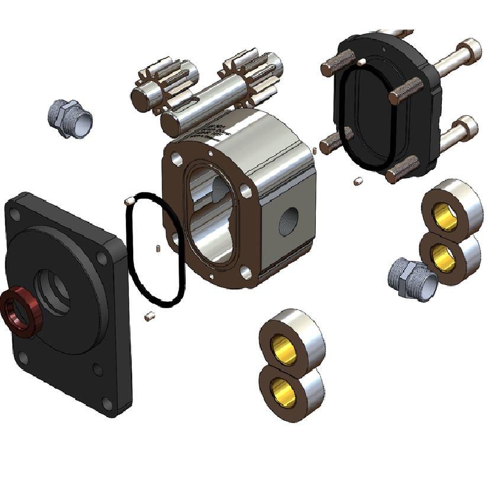
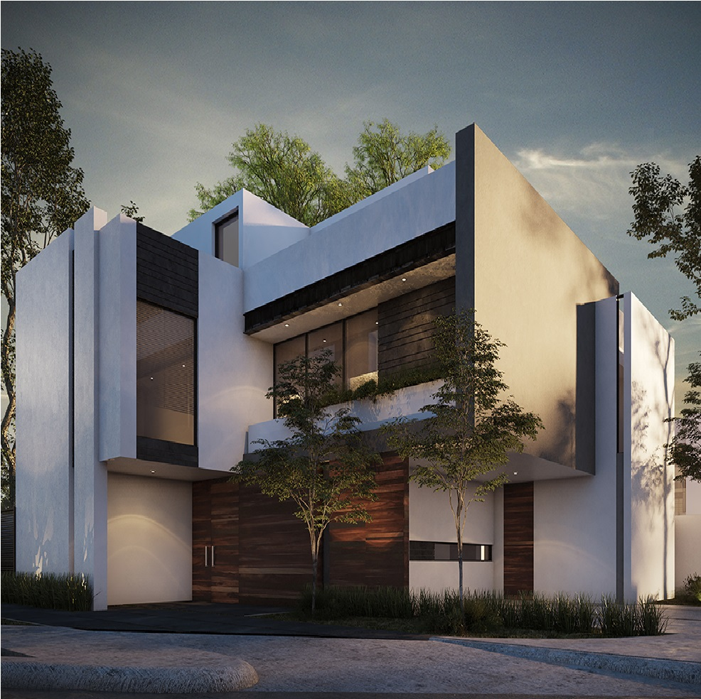

CONOCENOS
Nuestra empresa está especializada en proporcionar soluciones de ingeniería innovadoras y de vanguardia. Nuestro equipo de especialista ha desarrollado una variedad de soluciones innovadoras para satisfacer las necesidades de nuestros clientes. Nuestro centro de investigación y desarrollo está comprometido a proporcionar soluciones únicas y económicas para satisfacer las necesidades de nuestros clientes. Estamos comprometidos a proporcionar soluciones a la medida para cada uno de nuestros clientes para garantizar el éxito de sus proyectos.
DISEÑO INDUSTRIAL y PROTOTIPADO
Se refiere al proceso de generación de modelos 3D utilizando software y herramientas específicas. Estas herramientas proporcionan una representación visual y estructural de un producto antes de su fabricación. El diseño 3D permite a los diseñadores crear modelos tridimensionales complejos, con una precisión óptima para el desarrollo de productos precisos y eficaces. Los prototipos 3D son una forma de probar la funcionalidad, el diseño y la estética de un producto antes de que sea fabricado. Esto permite al diseñador identificar y corregir cualquier problema antes de la fabricación.
PROFESSIONAL RENDERING
Rendering profesional es el proceso de generar imágenes fotorrealistas a partir de modelos 3D. Esto involucra la aplicación de luz, texturas, sombras y otros componentes visuales para crear una imagen que parezca lo más realista posible. Estas imágenes se utilizan ampliamente en el diseño de interiores, la arquitectura, la animación y el diseño de productos, entre otras cosas. Rendering profesional es una habilidad esencial para cualquier profesional en estas áreas, ya que les ayuda a crear imágenes con un nivel de detalle y realismo que no pueden conseguirse de otra manera.
CONTRACULTURA EMPRESARIAL
Implementamos variedad de practicas con las que las empresas rompen con la cultura empresarial establecida. Estas formas pueden incluir la adopción de prácticas de trabajo flexibles, el establecimiento de nuevos objetivos de productividad, el apoyo a la innovación y la colaboración, el uso de herramientas y tecnologías innovadoras, el desarrollo de una cultura de trabajo inclusiva y la toma de decisiones más ágiles. Estas prácticas hacen que las empresas sean más innovadoras, adaptables y eficientes, lo que les ayuda a mantenerse competitivas en un entorno cambiante.
AGILE LEADERSHIP PROGRAM

El liderazgo ágil es una forma de liderazgo centrada en la mejora continua y la entrega de valor al cliente. Se trata de un enfoque que se centra en la capacitación, el compromiso y el respeto de los miembros de la organización, en lugar de la jerarquía y la autoridad. El liderazgo ágil promueve la flexibilidad, la colaboración y la comunicación efectiva entre todos los niveles de la organización. Esto permite a los empleados tener una voz en el proceso de toma de decisiones y promueve el trabajo en equipo, la autonomía y la creatividad para lograr los mejores resultados.